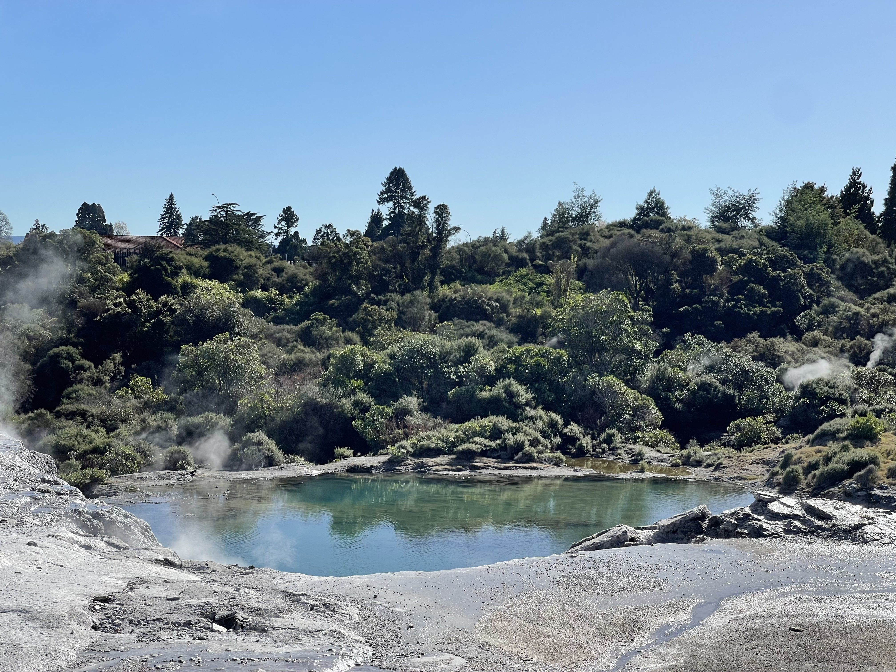
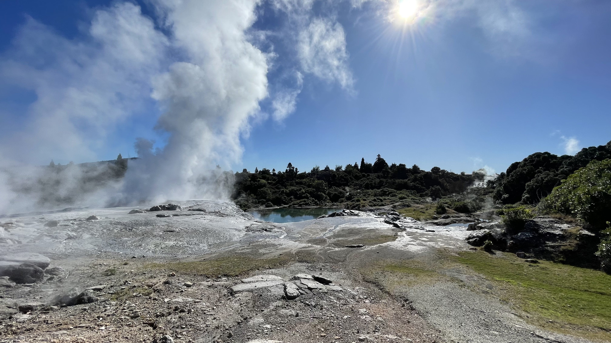
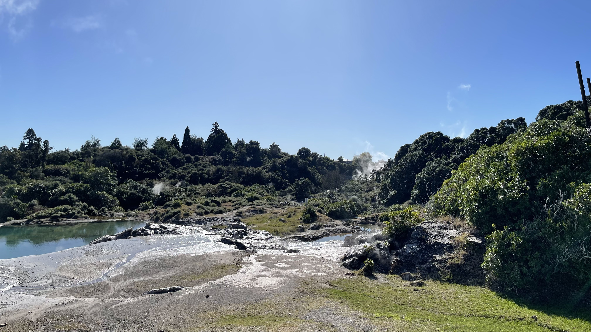
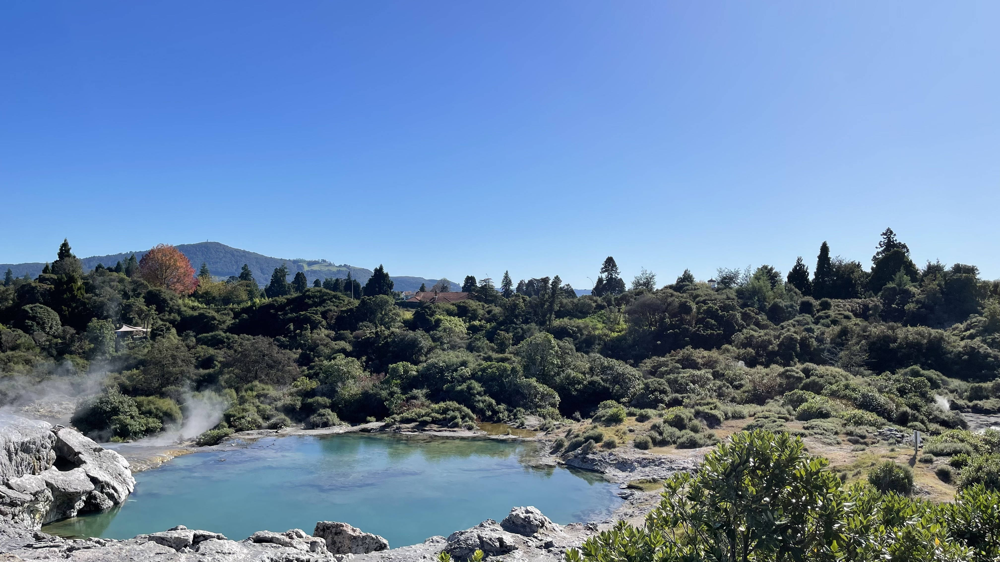

Geothermal Valleys
Our geothermal pools and stories...
There are over 500 pools and 65 geyser vents, each with its name, found in the 70-hectare Te Whakarewarewa geothermal valley in Rotorua.
Our traditional Māori explanation of Te Whakarewarewa Geothermal Valley states that this place was one of the area's 'Te Pupu' and 'Te Hoata', the Goddesses of Fire, who emerged from the earth's core while trying to find their brother Ngātoro-i-rangi, who was stranded on Mount Tongariro. As they rose to the surface looking for their brother, they left part of the fire they carried, creating geysers, hot springs, and mud pools, creating the geothermal activity that remains today.
Discover the magic of Te Puia's geothermal valley...




Step into the heart of Rotorua's natural wonders at Te Puia, where powerful geothermal forces shape a dramatic landscape of bubbling mud pools, steaming vents, and breathtaking geysers. As you wander through the valley, you'll experience the raw energy of the earth up close, surrounded by geothermal activity that has been treasured by Māori for centuries. Whether it's the world-famous Pōhutu Geyser or the tranquil beauty of hidden hot springs,